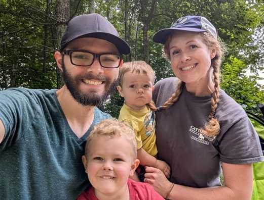

About Me
Hi, I'm Drew Jezek. I am an artist, father, and aspiring software developer. I grew up in the midwest and am currently living in Arizona. I have a BFA in Animation from BYU-Provo. I enjoy TTRPGs and playing games with my kids.
Snowflake, AZ
Snowflake, Arizona is a small town located in the northeastern part of the state. It is known for its rich history, beautiful landscapes, and strong sense of community. The town was founded in the late 1800s and has a population of around 5,000 residents. Snowflake is surrounded by stunning natural scenery, including mountains, forests, and rivers, making it a popular destination for outdoor enthusiasts.